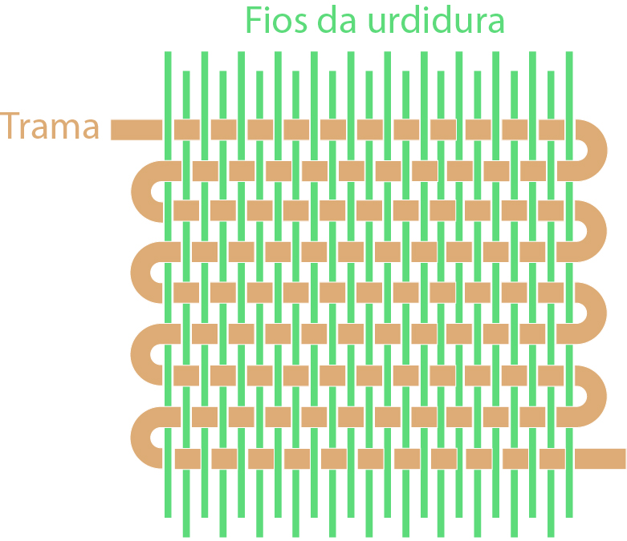
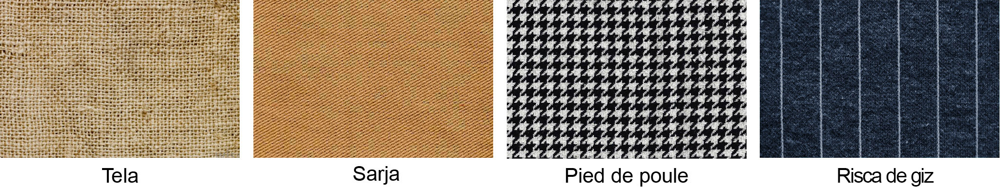
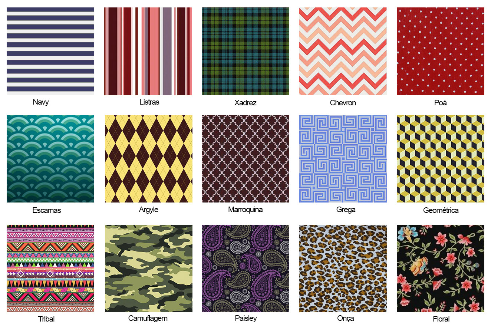

Os modos de entrelaçamento de fios de trama (transversais) com fios de urdume (longitudinais) que formam os tecidos, geram diferentes representações de superfície chamadas de padronagens.
Veja na imagem abaixo alguns exemplos de padronagens obtidas a partir da variação de entrelaçamentos, diâmetros, cores e tipos de materiais dos fios que compõem os tecidos.
Na imagem a seguir há alguns exemplos de padronagens obtidas a partir da variação de entrelaçamento, diâmetros, cores e tipos de materiais dos fios que compõem os tecidos.
Texturas, padronagens e repetições de temas são comumente representadas utilizando-se estampagem, ou seja, impressão de imagens com utilização de chapas gravadas. Existem infinitos tipos de estampas, abaixo. Alguns exemplos mais comuns:
